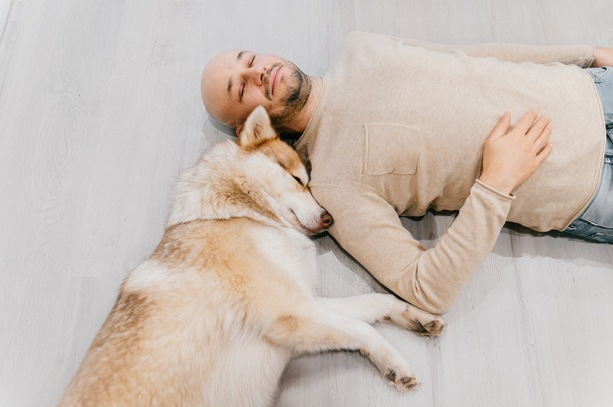

CONTACT US
-
2225 East Bayshore Road, Suite 200
Palo Alto, CA 94303
(877) 738-1838
877-PET1VET
Every year, millions of people make New Year's resolutions, hoping that this year will be better. Chances are, more than a couple of the top 10 most common resolutions will look familiar to you:
1. Exercise more - Walk your doggood for humans, good for dogs Dog owners enjoy numerous health and social benefits by walking their dog. Benefits include improved cardiovascular fitness, lower blood pressure, stronger muscles and bones (built up by walking regularly), and decreased stress. The same is true for your dog! Most dogs need to be walked at least once each day, though some dogs, particularly very active dogs, may require more. If you live in a condo or an apartment, you have to take your dog out twice a day to “take care of business.” Schedule 20 - 30 minutes to walk around the block and you and your furry friend could call it a moderate exercise. Many people need outside motivation to work out, and may depend on an exercise buddy to get them off the couch. What happens when your exercise partner gets stuck at work or stuck in traffic or has another commitment? Your dog is only committed to one thing… you! That makes her the perfect exercise partner. She’s always available and willing to accompany you on a walk. |
2. Lose weight - Healthy DietFinding good pet food is becoming complicated. Every dog food brand advertises that ingredients in their food are the most pure, and that their formula is most balanced, and that they are #1 recommended by somebody. Just consider the frequency of dog food recalls and the conflicting messages about what constitutes healthy ingredients. For example, the FDA has issued a warning in relation to some very popular dog food brands, about a possible connection between grain-free diets and heart disease in dogs. Because nutrition ultimately plays a large part in the quality of your dog’s life, many studies have been conducted on proper dog diet. Talk to your veterinarian so they can help find a safe diet whether you are looking for puppy food recommendations, or adult and senior dog. |
|
3. Get organized - Keep Up with Wellness Checkups and VaccinationsCheck-up visits with the veterinarian are important for early disease diagnosis. Veterinarians use physical examination and/or routine testing to detect the red flags of disease before a dog has any clinical signs. If a disease or condition can be detected before a pet shows signs of illness, steps can often be taken to manage or correct the problem before irreversible damage occurs, thus improving the likelihood of recovery. In addition, early detection and treatment is often less costly than waiting until a disease or problem becomes advanced enough to affect your pet's quality of life. Routine vaccinations and parasite preventatives can help your dog avoid illness or emergency veterinary visits. The core vaccinations, including canine parvovirus, distemper, canine hepatitis and rabies, are considered a must to all dogs. For dogs with active lifestyles that spend a lot of time around other dogs in parks, doggy daycare, or with a dog walker, a non-core vaccination like kennel cough or Lyme disease may be appropriate.
|
|
4. Learn a new skill or hobby - Mental Activity and TrainingDogs not only need food, water, shelter, physical exercise, and love, but they also need stimulation for their brains. Some dogs have so much energy that even after you go for long walks and play fetch they still have a lot left. Often times, however, a dog will be more tired after 15 minutes of scent games or training than after an hour long walk. Mental fatigue makes dogs (and humans) feel more physically tired than a physical effort alone. Training will give you a chance to brush up on manners, teach new tricks and bond with your furry friend. Working with a qualified dog trainer will speed up your improvement (and your dog’s) and spare you a lot of frustration. If you don’t have a qualified trainer who is a good match in your area, you can find an expert who trains remotely via Skype, Zoom or FaceTime. YouTube has many free dog training channels, such as Kikopup Tricks Tutorial.
|
|
5. Live life to the fullest - ... - Your Dog got this one
Dogs are much better than us, humans, at living life to the fullest. They are so adorable because they are always being their true, authentic self, and following their passion (even if it’s chasing squirrels.) If your dog is shy or cautious, you might work on slowly desensitizing her to objects, animals, and people she is afraid of. Professional trainers could be a great resource and help make sure you are moving at the right pace.
|
|
6. Save more money / spend less money - Get Pet InsuranceSuggesting that you buy pet insurance might sound like a contradiction. You don’t save money when you buy something - you spend it. However, veterinary care is the second highest expense after food. In addition to wellness and vaccinations, planning for unexpected illnesses and emergencies can save you a lot of money in the future. Your dog’s breed, age, and health are deciding factors for the veterinary care and insurance coverage they will need. Knowing yourself and understanding your own personality and financial situation is very important in making a decision about pet insurance. If you have an excellent credit score and can keep a cool head when your pet is sick, you could make a well-calculated decision on how much you can afford to spend on veterinary services and how you could borrow the funds. If you are good at saving money, you can set-up an account, recommended at $5,000 - $10,000 per pet, for emergency vet bills. For the rest of us pet insurance could be a great choice. Learn more about factors that affect your pet insurance premiums and claim payouts and check out our Top Pet Insurance Companies rating.
|
|
7. Quit smoking - Work on Your Dog’s Bad HabitsWhile we want our dogs to live life to the fullest and be themselves, sometimes we do want them to be better behaved. Excessive barking, chewing, jumping on strangers, and getting over-excited by a broom or vacuum cleaner are a few of the dog behaviors you could work on taming down. Again, a good dog trainer will help you. Most of the time just a few sessions with a dog trainer and a bit of follow-up will do the trick.
|
|
8. Spend more time with family and friends - Spend time with your dogJust hanging out with your dog on a couch is already beneficial to your health. Stroking a dog can lower blood pressure and help you quickly feel calmer because touch and movement are two healthy ways to quickly manage stress. Dogs and humans who interact with one another also get a jolt of oxytocin, sometimes called "cuddle hormone." Many studies have found a link between oxytocin and anti-anxiety effects, increased pain threshold, and various types of positive social interaction. In addition, it promotes growth and healing.
|
|
9. Travel more - Take your dog to parks and beachesJust like us, dogs enjoy new experiences and environments. They don’t necessarily need to take a flight to exotic destination. In fact, flying might cause your dog more stress than good. So stay close to home. Your dog and you can benefit from day trips to a state or national parks, forest preserves, and beaches, rivers, and lakes. For centuries, Japanese tradition has recommended forests for healing. Forest bathing – also known as forest therapy – has been proven to reduce stress causing hormones and systolic blood pressure. In the US you can now hire a Certified Forest Therapy Guide for you and your dog. Watch the pure joy on your dogs face as she scampers about, snuffling happily at all those new smells and listening to the sounds of the forest. For many dogs, one of the joys of forest walks is the other dogs that they meet along the way. There are many Off-leash areas in National Forests that allow dogs to run, jump and play freely.
|
|
10. Read more - Let your dog sniff moreIf you ever observe your dog’s face while she’s sniffing, you’d notice almost a variety of expressions - from thoughtful, to surprised, to confused, to alert. If you let them sniff freely, they would follow the smell - sniff in circles on the ground, lift the head and sniff the air, back to the ground but a few feet away, and repeat, and … oh… she found and ate a piece of moldy bread. While humans are visual, dogs are olfactionary and perceive the world by scent. Dogs' sense of smell overpowers our own by orders of magnitude—it's 10,000 to 100,000 times as acute. In her book Inside of a Dog, Alexandra Horowitz, a dog-cognition researcher at Barnard College, writes that while we might notice if our coffee has had a teaspoon of sugar added to it, a dog could detect a teaspoon of sugar in a million gallons of water, or two Olympic-sized pools worth. In other words, your dog gets as much information from sniffing around for 5 minutes as you do from reading a good sized article. Back to the problem of dog finding and eating garbage off the ground - with time you will learn to recognize by the way dog sniffs when she’s close to finding something edible, and will be able to pull her away in time. Training “leave it” and “drop it” commands should help with that issue as well.
|
>> Holiday Safety Tips
>> Best Pet Insurance for Your Dog
(877) 738-1838
877-PET1VET